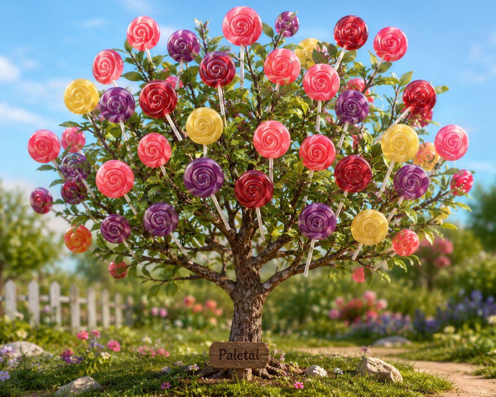
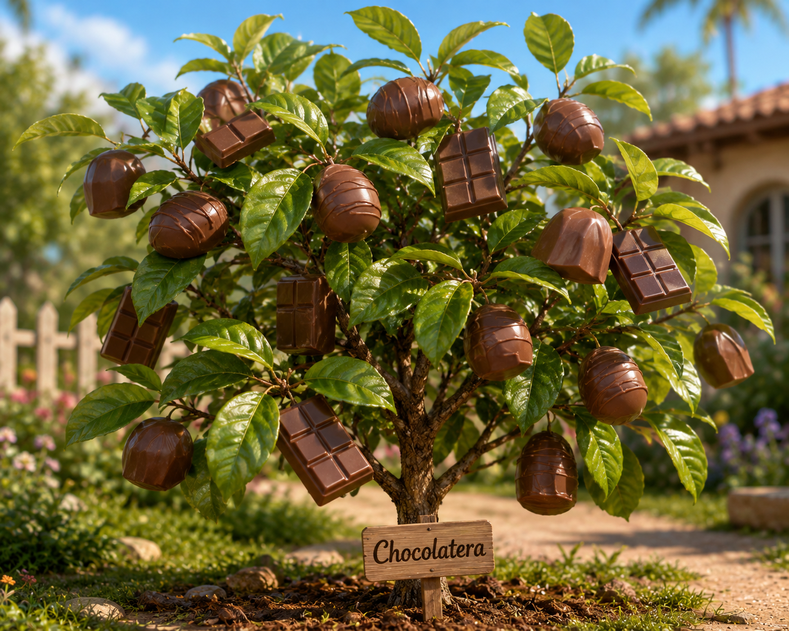
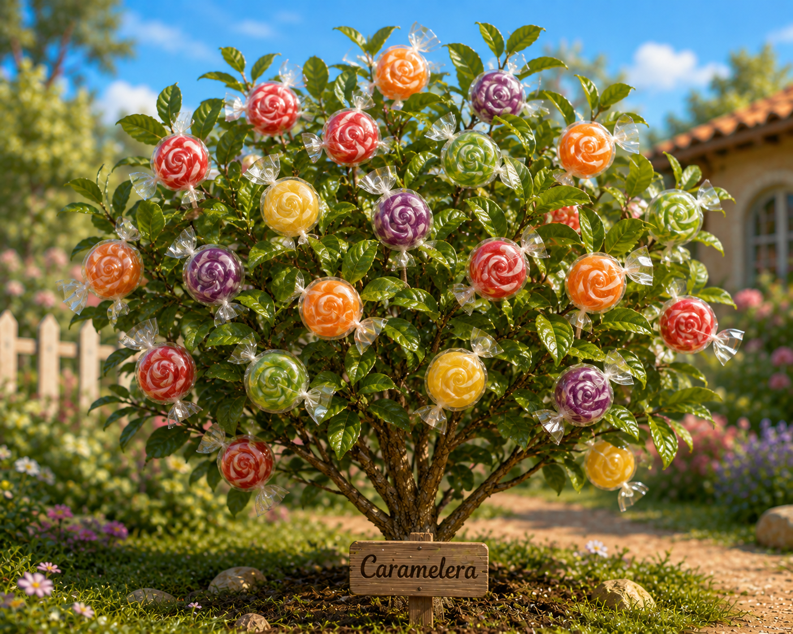
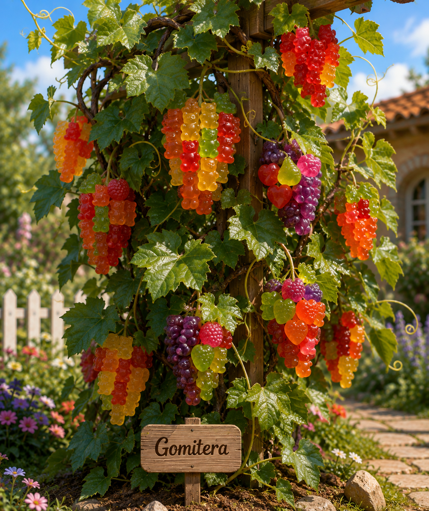
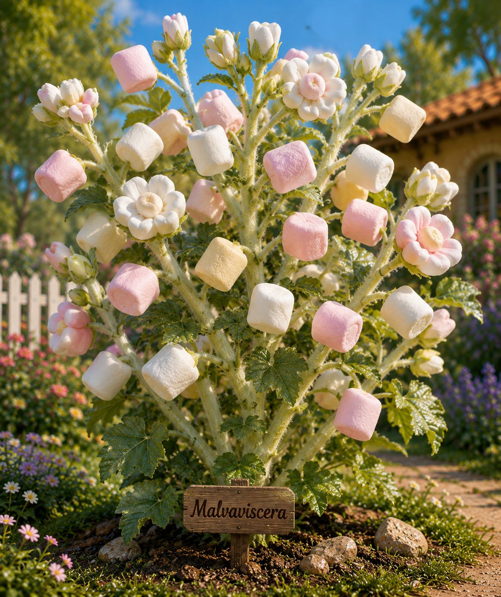
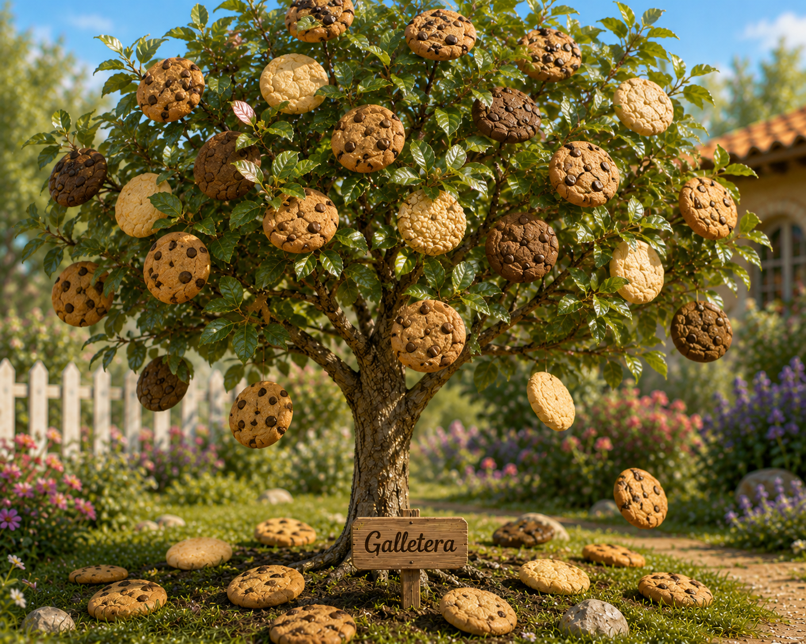

Aprende más sobre nuestras plantas y árboles
Descubrí todo lo que necesitás saber sobre nuestras plantas y árboles mágicos. Conocé sus características, cómo crecen, qué frutos producen y cuáles son los cuidados que necesita cada especie. Aprendé a cuidar tu planta y disfrutá de una experiencia de cultivo diferente, divertida y llena de magia.
PALETAL

La Paletal es un pequeño árbol mágico que produce paletas de distintos sabores, como fresa, limón, uva y cereza. Sus ramas crecen lentamente y, cuando llega el momento de la cosecha, comienzan a aparecer coloridas paletas entre sus hojas. Es una planta ideal para darle un toque divertido y colorido al jardín. Para crecer correctamente necesita buena luz, riego moderado y espacio suficiente para desarrollar sus ramas.
CHOCOLATERA

La Chocolatera es una planta de hojas verdes y brillantes que produce tabletas y bombones de chocolate. Sus frutos comienzan como pequeños brotes y van creciendo hasta alcanzar el tamaño adecuado para ser cosechados. Prefiere los lugares cálidos y soleados, además de un suelo bien cuidado. Con las condiciones adecuadas puede producir chocolate durante gran parte del año.
CARAMELERA

La Caramelera es un arbusto mágico capaz de producir caramelos de diferentes colores y sabores. Una de sus características más especiales es que sus frutos pueden cambiar según la estación del año, ofreciendo una sorpresa diferente en cada cosecha. Es una planta resistente y fácil de cuidar, ideal para quienes buscan algo original para su jardín.
GOMITERA

La Gomitera es una planta trepadora cuyos racimos producen gomitas de distintas formas, colores y sabores. Entre sus hojas pueden encontrarse gomitas con forma de ositos, frutas y otras figuras. Necesita espacio para extender sus ramas y crecer correctamente. Con buenos cuidados, puede producir nuevos racimos varias veces durante el año.
MALVAVISCERA

La Malvaviscera es una planta de tallos suaves y esponjosos que produce deliciosos malvaviscos de diferentes colores. Sus flores desprenden un suave aroma a vainilla y sus frutos aparecen entre los tallos cuando la planta alcanza la madurez. Prefiere lugares con buena iluminación y necesita cuidados constantes para mantener sus tallos saludables.
GALLETERA

La Galletera es un árbol mágico de tamaño mediano que produce galletas de chocolate, vainilla y avena. Sus frutos crecen lentamente hasta alcanzar el punto perfecto de maduración. Cuando están listas, las galletas caen suavemente de las ramas sin romperse. Es una especie especial para quienes quieren convertir la cosecha del jardín en una experiencia completamente diferente.
¿Ya encontraste tu favorita?
Ahora que conocés un poco más sobre nuestras plantas mágicas, esperamos que hayas encontrado la que más te guste. Si querés seguir descubriendo nuestro mundo o ya estás listo para elegir la tuya, podés volver a la tienda o reservar tu planta.
Volver al inicio Reservar mi planta